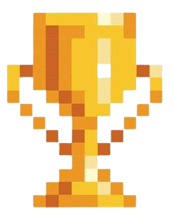

O MELHOR PORTAL DE

FIQUE POR DENTRO DOS MODS QUE ESTÃO EM ALTA!
O MELHOR PORTAL DE
FIQUE POR DENTRO DOS MODS QUE ESTÃO EM ALTA!
RANKING MODS MAIS USADOS


É um jogo de sobrevivência em formato de blocos que não possui objetivos específicos a serem alcançados, permitindo aos jogadores uma grande liberdade de escolha de como jogá-lo. No entanto, existe um sistema de conquistas, conhecido como "progressos. Mas ele te da a liberdade para criar coisas e sobreviver do seu modo. Tem biomas diferentes, bichos diferentes e sempre coisas novas, venha conhecer esse mundo.